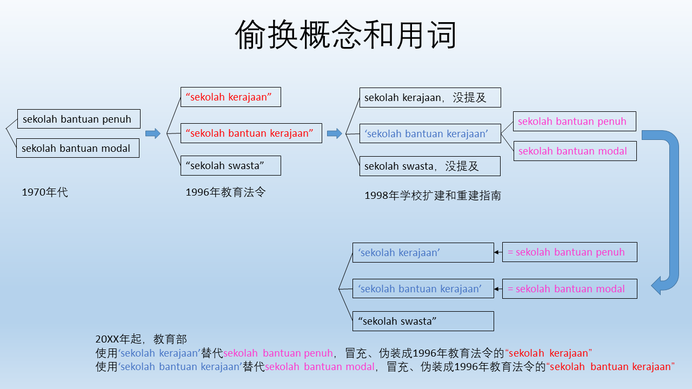

华教论坛 凝聚华教同道 交流华教课题
现场出席者合影。基于国内外局势演变以及我国华教事业迎来各种机遇与挑战，因此需加强和凝聚华教同道开拓新形势下的华教运动与事业，认识和解决所面对的问题。为此，董总中央常务委员会与中央委员会决定自2022年开始，每三个月或半年举办华教论坛，以交流和凝聚华团、华教同道对华教课题的共识。
第一场次的华教论坛于2022年6月25日（星期六）下午2时10分，在董总A403讲堂和ZOOM线上平台同步进行。论坛当天的两项讨论课题分别为：一、“政府学校”与“政府资助学校”（引言人为董总资料与档案局研究员沈天奇）；二、全国华小资料收集——2022年各州董联会问卷调查分析兼谈全国华小问卷调查计划（引言人为董总副执行长（总务处）暨资料与档案局局主任锺伟前），主持人为董总秘书长庄俊隆。此次论坛的参与对象为董总中央委员，以及各属会的理事成员、秘书处人员，共有40多人出席。
沈天奇为出席者讲解《1996年教育法令》下国家教育体系内的学校划分。在《1996年教育法令》下，国家教育体系必须包括：学前教育、小学教育、中学教育、中学后教育和高等教育。而在国家教育体系内，有三个种类的教育机构，分别为政府教育机构（包含“政府学校”）、政府资助教育机构（包含“政府资助学校”）和私立教育机构（包含“私立学校”）。
他指出其中一个重点，即《1996年教育法令》根据学校拥有权划分学校种类，如：政府学校、政府资助学校和私立学校；由教育部长设立或创办并完全维持的国民型学校属于“政府学校”，而由民间社会设立或创办并获得政府资助的国民型学校属于“政府资助学校”；此外，学校类型则根据学校主要教学媒介语作划分，如：国民学校（国小）、国民型学校（华小、淡小）等。《1996年教育法令》并不是根据学校土地拥有权来划分学校种类和发出教育拨款。
另外，《1996年教育法令》也阐明“政府资助学校”享有两种法定拨款权利，即资本拨款（俗称发展拨款）和全部的资助拨款（俗称行政拨款）。但是，教育部却另行诠释和定义自造‘政府资助学校’，把一种学校变成两种学校（“全津贴学校”、“半津贴学校”）。教育部自行诠释和定义的‘政府学校’和‘政府资助学校’，跟《1996年教育法令》阐明和定义的“政府学校”和“政府资助学校”是不同的事。
近年来，教育部、新闻报导等皆错误地把“全津贴学校”等同于“政府学校”，“半津贴学校”等同于“政府资助学校”，这造成对“政府学校”、“政府资助学校”、“全津贴学校”、“半津贴学校”在概念和用词上的混淆、误解和错误，因此应停止使用错误用词，避免把不同类的学校当作同类的学校。
锺伟前表示华校有特殊的办学使命，母语是民族的灵魂，而母语教育既是作为一个族群的重要文化与身份的承传枢纽。华校作为华裔在马来西亚母语教育承传的主渠道，我们就必须坚持华校的重要特征，即：华小董事会拥有管理学校的主权、华语作为主要教学媒介语，以及华语必须是华小的行政用语。他提到华校是华教的保垒，董事会则是华校的保姆，由此可见董事会的角色相当重要。
他指出，作为华校的董事，应当了解华教董事会的使命，且扮演好华校董事的职责。华校董事会的使命即是：捍卫与发扬华校应有的“特殊教育使命”，督导与推展华校的“一般教育使命”，坚持与维护华文学校的特征。华校董事的职责则为：确保董事会的合法运作，确保董事会有效的运作，发挥董事会积极主动的功能和关注教育法令、各类政策、行政措施对华小的影响，并且采取必要的对策。
锺伟前也分享了资料与档案局于2022年5月18日向董总各属会发出的问卷调查。该问卷调查的内容涵括：学校基本资料调查、学校董事会组织运作资料调查、其他调查和巡访学校调查。问卷调查主要目的为收集各属会的相关会务工作计划，了解该属会对州内各校进行的资料调查计划概况，以及加强学校董事会组织运作的工作进展。
此次的问卷调查共发出13份，回收12份。在学校基本资料调查的部分，2018年至2022年期间共有7个属会对华小和国民型中学的学生人数等方面进行调查，而华文独中方面的调查则有8个属会有在进行。此外，各属会也针对华小、华文独中和国民型中学的董事会组织运作进行调查，但在2018年至2022年期间，每年完成调查的属会并不多，只有2至3个属会有进行此调查。在2010年至2022年期间，仅有6个属会有进行巡访州内学校的计划。
另外，董总将和各属会配合，计划在明年展开“全国华小问卷调查计划——学校董事会组织运作调查问卷”。其目的是为了了解和掌握学校董事会的运作概况，收集全国华小基本数据，以及协同各属会推动华小问卷调查计划，以作为未来探寻解决华教问题的依据。该问卷大纲为：学校基本资料、学校注册证、学校董事会组织结构、学校董事注册证、学校董事会会议、学校董事会章程、学校赞助人简则、学校产业管理、校园范围土地、校园外产业和教育拨款申请。
两位引言人的精彩汇报，让出席的同道获益良多。出席者在论坛上也提出各自属会所面对的问题，其中大家最为关注的课题是“如何让董事懂事”，大家皆认为应该为董总中央委员和各地董事举办培训课程，加深他们对华教和一些课题的认识。此外，推动强化董事会运动、董事注册等问题也需要加以重视，董总亦会寻求方案积极解决相应的问题。
"政府学校"与"政府资助学校"
（一）《1996年教育法令》下的学校划分/分类
根据《1996年教育法令》第15条，国家教育体系内必须包括学前教育、小学教育、中学教育、中学后教育和高等教育，但不包括外籍学校（侨民学校）和国际学校的教育。外籍学校和国际学校是国家教育体系外的学校。华文独立中学是国家教育体系内的学校，并不是国家教育体系外的学校。
《1996年教育法令》根据学校拥有权（school ownership/hakmilik sekolah）来划分学校种类（school categories），以及根据学校主要教学媒介语文（main medium of instruction）来划分学校类型（school types）。该法令不是根据学校土地拥有权（school land owndership/hakmilik tanah sekolah）来划分学校种类和发出教育拨款。
该法令第2条阐明，“教育机构”是指学校、幼儿园、远程教育中心、一个组织或机构惯性教导人们的任何地方（一个或多个班级，如补习中心），但不包括教导宗教的地方和部长指定的地方。
在该法令第16条下，国家教育体系内有三个种类的学校，即“政府学校”（government school/sekolah kerajaan）、“政府资助学校”（government-aided school/sekolah bantuan kerajaan）和“私立学校”（private school/sekolah swasta）。这是学校种类的划分，涉及学校拥有权或学校创办者。学校创办者（创校者）享有学校拥有权。
根据学校拥有权所划分的三种类学校
| 政府学校 | 政府资助学校 | 私立学校 |
|---|---|---|
|
|
|
（二）概念和用词上的混淆、误解和错误
教育部官员和社会人士对教育法令内的一些概念和用词存有不同的认知，他们的认知与《1996年教育法令》所阐明的诠释或定义有所不同，进而导致混淆、误解和错误。
在1970年代，就已出现“全津贴学校”和“半津贴学校”的课题，争议许久。无论是过去或现在的教育法令里，都没有“全津贴学校”（“sekolah bantuan penuh”）和“半津贴学校”（“sekolah bantuan modal”）的名词和学校划分，这两个名词是教育部官员自造的名词，没有法律根据，其主要目的在于根据学校土地拥有权，来限制或减少华小、淡小、教会学校、改制中学等的发展拨款，以及诱使把这些学校的土地拥有权交给教育部。
直到《1996年教育法令》于1997年底生效实施后，该法令规定三种类学校，即“政府学校”（“sekolah kerajaan”）、“政府资助学校”（“sekolah bantuan kerajaan”）和“私立学校”（“sekolah swasta”），没有所谓的“全津贴学校”和“半津贴学校”的名词和学校划分。
但是，由教育部教育政策研究与规划司所拟订并于1998年1月14日获得教育部管理会议批准的《1998年学校扩建和重建指南》，却自造另一个版本的‘sekolah bantuan kerajaan’（‘政府资助学校’），这个‘sekolah bantuan kerajaan’是冒充、伪装版本，不是《1996年教育法令》里的“sekolah bantuan kerajaan”（“政府资助学校”）。
教育部官员在该指南把自造的‘sekolah bantuan kerajaan’分为“sekolah bantuan penuh”（“全津贴学校”）和“sekolah bantuan modal”（“半津贴学校”）。其演变是：
- 根据《1996年教育法令》，每一所政府资助学校享有两种拨款权利——资本拨款（capital grant/sumbangan modal，俗称发展拨款），以及全部的资助拨款（full grant-in-aid/sumbangan bantuan penuh，俗称行政拨款）。
- 但是，教育部自造了‘sekolah bantuan kerajaan’，然后把sumbangan modal和sumbangan bantuan penuh分别改为“sekolah bantuan modal”和“sekolah bantuan penuh”，把一种学校变成两种学校。
概念上的混淆、误解、错误
| 混淆、误解、错误的概念 | 正确的概念 |
|---|---|
| 学校土地拥有权是学校拥有权。 某所华小的土地属于联邦政府，这所华小是政府学校。 |
学校土地拥有权不是学校拥有权。 民间社会创办的某所华小，在《1996年教育法令》下享有拨款权利，尽管校地属于或不属于联邦政府，这所华小依然是“政府资助学校”，不是“政府学校”。 注解：
|
用词上的混淆、误解、错误
| 混淆、误解、错误的用词 | 正确解析 |
|---|---|
| sekolah bantuan penuh（全津贴学校）是sekolah kerajaan（政府学校）。 sekolah bantuan modal（半津贴学校）是sekolah bantuan kerajaan（政府资助学校）。 |
sekolah bantuan penuh（全津贴学校）不是sekolah kerajaan（政府学校）。 sekolah bantuan modal（半津贴学校）不是sekolah bantuan kerajaan（政府资助学校）。 sekolah bantuan penuh和sekolah bantuan modal是教育部法外立法和自造的名词，根据学校土地拥有权把学校分类，以限制华小、淡小等学校的拨款，以拨款诱使民间社会创校者把学校土地拥有权交给教育部。教育法令没有这两类学校的名词。 |
| 全津贴学校（政府学校） 半津贴学校（政府资助学校） 政府学校（全津贴学校） 政府资助学校（半津贴学校） 全津贴华小（政府华小） 半津贴华小（政府资助华小） 政府华小（全津贴华小） 政府资助华小（半津贴华小） |
错误用词，应停止使用 |
| 把全国1,302所华小区分为：（2022年3月统计） 417所全津贴华小，885所半津贴华小 417所全津贴学校，885所半津贴学校 把全国1,302所华小区分为： 417所政府华小，885所政府资助华小 417所政府学校，885所政府资助学校 |
左栏的全津贴学校、半津贴学校是教育部根据学校土地拥有权来区分华小所得出的统计数字。 但是，根据学校拥有权来划分学校种类，初步估计全国约有1,275所华小（98%）是民间社会创办的，属于政府资助学校。全国只有极少数（初计约27所，2%）的华小属于政府学校。 应停止使用错误的学校种类划分、名词、统计数字，并纠正错误。教育部把全津贴学校、半津贴学校的名词和定义，错用在自造的‘政府学校’和‘政府资助学校’。 偷换概念和用词：假借教育部自己诠释的‘政府学校’和‘政府资助学校’的名词，使用的却是教育部自造的“全津贴学校”和“半津贴学校”的定义，完全不是《1996年教育法令》下“政府学校”和“政府资助学校”的法定定义。 |
（三）讨论课题
是否废除“政府学校”和“政府资助学校”的区分？
当我们深入研究此课题时，会发现废除这些学校种类的区分，可能会引发各种严重问题和危机，例如学校董事会被废除而不复存在，民间社会创校者丧失学校拥有权。其实，“政府资助学校”和学校拥有权具有保护华文学校、淡米尔文学校继续存在的法律意义，这是十分重要的关键点。
为何把学校区分为“政府学校”和“政府资助学校”呢？主因是政府可创办学校，以及民间社会可提出申请并获准创办学校而且学校获得政府资助，以及创校者享有学校拥有权。
如果废除“政府学校”和“政府资助学校”的区分，全部变成“政府学校”，就会如同国小没有学校董事会一样，华小等学校也会变成没有学校董事会；或者民间社会所享有的华小的学校拥有权（是学校拥有权，不是学校土地拥有权）交给了政府，以后华社就没有对华小的决定权。
回顾过去，为何教育部当年提出把某些华小迁入“宏愿学校”时，华小董事会有权拒绝，以及当地华社召开大会议决拒绝教育部要把该华小迁入“宏愿学校”，这是因为当地华社所委托的华小创校者或董事会，享有华小的学校拥有权。
华小、淡小是否违反联邦宪法？
在马来亚独立之前制定的《1957年教育法令》，继续把各源流学校纳入国家教育体系。独立后不久，政府致函华文小学准予全部资助，成为国家教育体系内的“标准型小学”，当时华教三大机构（马华公会、教总、董总）联合通告全马华小接受成为国家教育体系内的“标准型小学”。这说明经过各族领袖协商，国家宪法和法令的条款保障各族权利和利益，包括保留各源流母语教育学校，成为独立建国的基石。
总而言之，无论是1920年至1950年《学校注册法令》、《1952年教育法令》、《1957年教育法令》、《1961年教育法令》，到现在的《1996年教育法令》，都继续把各源流学校纳入国家教育体系。“标准型小学”（“standard type primary school”）在《1961年教育法令》下改称“国民型小学”（“national-type primary school”）。“国民型小学”在《1996年教育法令》下改称“国民型学校”（“national-type school”）。
联邦宪法第160条第2款阐明，“public authority” means a statutory authority exercising powers vested in it by federal or State law，中译为：“公共权力当局”（“public authority”）是指一个行使联邦或州法律所赋予权力的法定权力当局（statutory authority）。
回看《1996年教育法令》各个条文，该法令赋予权力（powers）给教育部长。由此可见，教育部长是“公共权力当局”（“public authority”/“pihak berkuasa awam”）或“法定权力当局”（“statutory authority”/“pihak berkuasa berkanun”）。华小、淡小不是“公共权力当局”或“法定权力当局”，华小、淡小只是享有法定的权利（rights/hak-hak）和利益（interests/kepentingan-kepentingan），不享有法定的权力（powers/kuasa）。
独立后的1971年修宪条款的目的是关于公民权、国语、马来人特别地位、统治者主权，以及“public authority”在官方用途使用国语，完全没提修宪目的是废除华文学校、淡米尔文学校或禁止使用非马来语为教学媒介语。
近年，吉隆坡高庭、哥打巴鲁高庭判决华小、淡小没有违反宪法。吉隆坡高庭判决，华小、淡小不是“public authority”，使用华语、淡米尔语为教学媒介语不是作为官方目的（官方用途）。
华小、淡小不是“公共权力当局”（“public authority”）或“法定权力当局”（“statutory authority”），不是用于官方用途，可以使用不是国语（马来语）的其他语文，即华语或淡米尔语作为各自的主要教学媒介语。